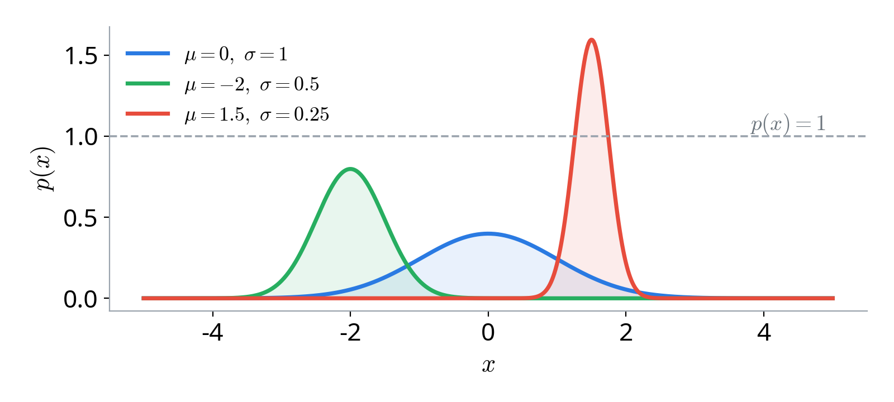
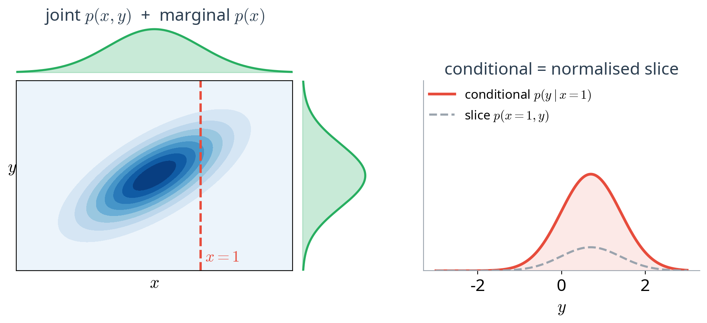
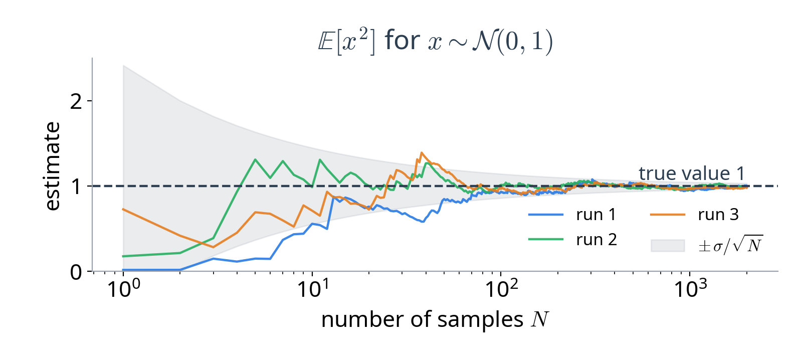
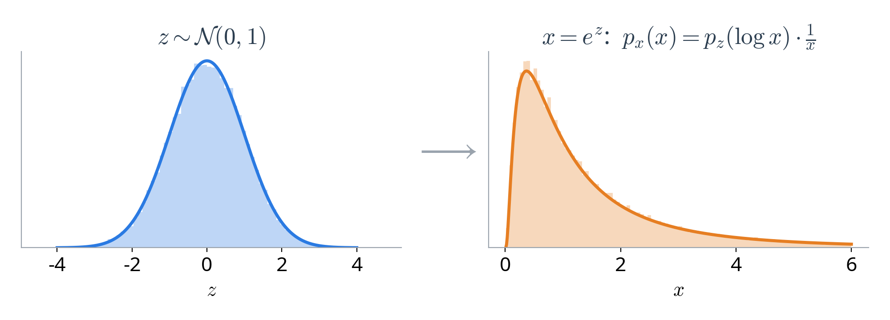
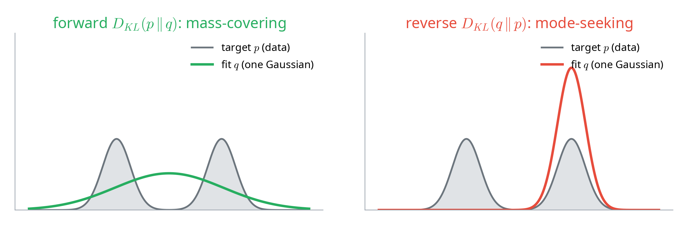
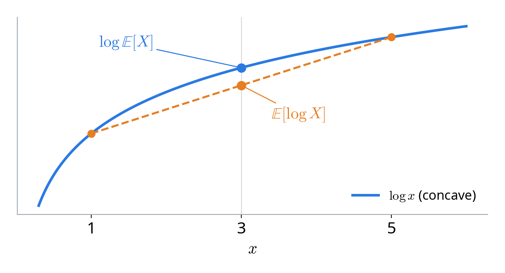

IAI · UET · VNU
Presenter: Trinh Ngoc Huynh
Email: huynhtn@vnu.edu.vn
Discrete and continuous distributions, and the Gaussian
The product rule, chain rule and Bayes rule
Monte Carlo estimation, ancestral sampling, change of variables
Measuring uncertainty and the gap between distributions
MLE, its link to KL, and Jensen's inequality
countably many values
a token, a class label
values in a continuum
a pixel intensity, an audio amplitude
An image is a single high-dimensional random vector \( x \in \mathbb{R}^{H \times W \times C} \).
\( p(x) \) is a probability
\( p(x)\,dx \) is a probability

A density can exceed 1: only its integral must equal 1.
one of \( K \) discrete outcomes
next-token prediction
bell-shaped, set by mean and variance
VAE prior, diffusion noise
every value equally likely
the raw source of randomness
Generative models turn samples from these simple distributions into complex data.
mean and variance describe it fully
a mean vector and a covariance matrix
shift and scale \( \epsilon \sim \mathcal{N}(0, 1) \)
It appears as the prior in VAEs and as the noise in diffusion models.
both variables together
integrate out what we do not need
\( y \) when \( x \) is known

factorise many variables one at a time
turn \( p(x \mid y) \) into \( p(y \mid x) \)
Both key rules of this section follow from this one identity.
One hard \( D \)-dimensional problem becomes \( D \) one-dimensional ones: the basis of autoregressive models (Lectures 04–05).
belief about \( z \) before seeing data
how \( z \) generates \( x \)
\( \int p(x \mid z) p(z)\, dz \): usually intractable
Lecture 03 shows how variational inference sidesteps the intractable evidence.
knowing \( x \) says nothing about \( y \)
independent once \( z \) is known
Latent-variable models assume the pixels become independent given the latent \( z \).
The average value of a function \( f \) under a distribution \( p \):
average over the data
average over the latent
Nearly every training objective in this course is an expectation.

Unbiased, with error \( \propto 1/\sqrt{N} \): this is why a minibatch can stand in for the whole dataset.
For a factorised model \( p(x, z) = p(z)\, p(x \mid z) \), sample in the order of the factorisation:
e.g. Gaussian noise
e.g. a neural network
This is how a VAE or a GAN produces an image: draw \( z \), then map it to \( x \).

The Jacobian term tracks how the map stretches space: the foundation of normalizing flows (Lecture 08).
maximal uncertainty
fairly predictable
no uncertainty
Entropy measures uncertainty: the average surprise \( -\log p(x) \).
the average surprise when data come from \( p \) but we predict with a model \( q \)
the standard loss for classifiers and language models
\( H(p, q) \ge H(p) \): using the wrong model always costs extra.
the extra cost is never negative
it measures a gap
so it is not a distance
KL is the core regulariser in the VAE objective.
what we minimise
fixed by the data
what actually changes
Minimising cross-entropy is the same as minimising KL.
Fit a single Gaussian \( q \) to a two-mode target \( p \):

Intuition for failure modes: over-spread, blurry samples (forward) vs. samples that miss modes (reverse).
Choose the parameters that make the observed data most probable:
\( \log \) is increasing, so the maximiser does not change
products of many small numbers underflow; sums do not
MLE is the default training principle for most generative models.
Fitting by likelihood is matching the data distribution: Lecture 01's goal \( p_\theta \approx p_{\text{data}} \) as a concrete loss.

This is exactly the step that produces the ELBO in Lecture 03.
Every tool in this lecture reappears as the core of a model family.
Next lecture: Latent Variable Models & Variational Inference